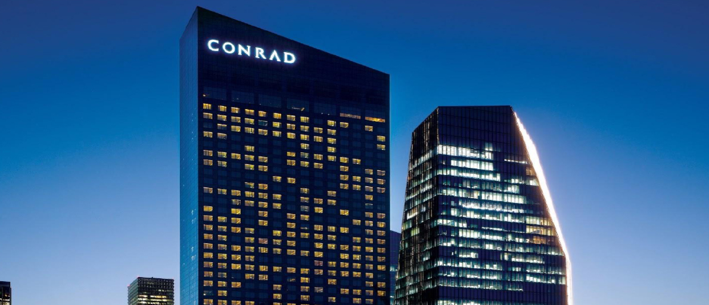

IFC Mall
The IFC Mall is a large indoor mall nearest Conrad Seoul. There is a diverse range of stores that sell clothing, cosmetics, international designer brands, and more.
The Conrad Seoul Hotel is a 5-star hotel located in Yeongdeungpo-gu, Seoul. It is connected to IFC Mall and is within four blocks of Yeouido subway station, which connects to central Seoul. There are several tourist attractions nearby such as the 63 Building, Yeouido Han River Park, andthe National Assembly Building. The high- end business hotel provides a wide range of excellent meeting and banquet spaces spread over three floors.
